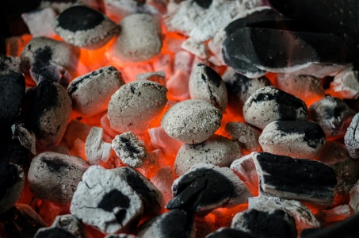

Our mission is to provide sustainable and efficient briquettes while empowering communities and preserving the environment.
Our vision is to lead the way in transforming waste into valuable resources, driving positive change for a greener and cleaner future.
SuperHeat Briquettes is on a mission to revolutionize the energy industry with its innovative approach to sustainable fuel production. As a black-woman owned business, we are committed to addressing environmental challenges while creating economic opportunities for marginalized communities. Our purpose is deeply rooted in the belief that environmental sustainability and social responsibility go hand in hand, and we aim to make a positive impact on both fronts.
Our primary goal is to provide clean and efficient briquettes made from waste materials, offering a sustainable alternative to traditional fuel sources. By transforming waste into valuable resources, we contribute to reducing landfill waste and mitigating environmental pollution. Our briquettes are not only eco-friendly but also cost-effective, providing an affordable fuel option for households and businesses alike.
In the near future, we envision expanding our operations to reach a wider audience and meet the growing demand for sustainable fuel solutions. We aim to invest in state-of-the-art machinery and technology to optimize our production process and increase efficiency. By scaling up our operations, we can maximize our impact on the environment while also creating more job opportunities within our community.
Furthermore, we are dedicated to fostering partnerships with other environmentally conscious organizations and stakeholders to amplify our reach and influence. Collaborating with like-minded entities will enable us to exchange ideas, share resources and implement innovative solutions to tackle pressing environmental issues collectively.
In summary, our business aims to be a catalyst for positive change in the energy industry by providing sustainable fuel solutions, promoting environmental stewardship and empowering communities. We are driven by our mission to create a greener and cleaner future for generations to come, and we are excited about the possibilities that lie ahead on our journey towards achieving our goals.
As a small business dedicated to sustainable practices, we are seeking funding to invest in essential machinery and land to expand our operations. Specifically, we aim to acquire equipment for mixing, crushing waste materials and compressing them into briquettes, as well as securing land to carry out these activities effectively. This funding will not only enable us to increase production to meet growing demand but also create job opportunities for locals in surrounding communities.
By expanding our capacity, we can further our mission of transforming waste into valuable resources while positively impacting the environment and local economies. Your support will play a crucial role in fueling our growth and sustainability efforts, while also contributing to the prosperity of our community. Together, we can make a meaningful difference in addressing environmental challenges and fostering economic development.
Briquettes are made from various waste materials such as paper, cardboard, agricultural residues, sawdust, and other biomass materials.
Briquettes offer several benefits, including: Environmental sustainability: Briquettes help reduce waste by repurposing materials that would otherwise end up in landfills. Energy efficiency: Briquettes provide a clean and efficient source of heat, making them ideal for cooking, heating, and other energy needs. Cost-effectiveness: Briquettes are often more affordable than traditional fuels, making them a cost-effective option for households and businesses.
Briquettes can be used for a variety of purposes, including: Cooking: Briquettes are commonly used as a fuel source for outdoor grills and barbecues. Heating: Briquettes can be used in stoves, fireplaces, and wood-burning furnaces to provide heat. Industrial applications: Briquettes are also used in industrial settings for heating and energy generation.
Yes, briquettes are safe to use. They produce minimal smoke and ash compared to traditional fuels, resulting in cleaner indoor air quality.